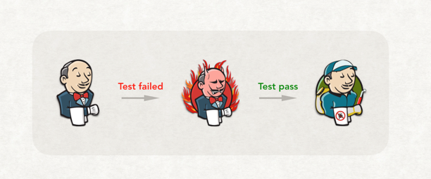
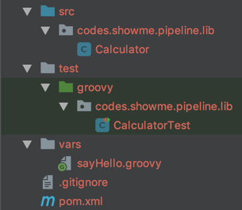

如何对 Jenkins 共享库进行单元测试

Jenkins 共享库是除了 Jenkins 插件外，另一种扩展 Jenkins 流水线的技术。通过它，可以轻松地自定义步骤，还可以对现有的流水线逻辑进行一定程度的抽象与封装。至于如何写及如何使用它，读者朋友可以移步附录中的官方文档。
对共享库进行单元测试的原因
但是如何对它进行单元测试呢？共享库越来越大时，你不得不考虑这个问题。因为如果你不在早期就开始单元测试，共享库后期可能就会发展成如下图所示的“艺术品”——能工作，但是脆弱到没有人敢动。
[图片来自网络，侵权必删]
这就是代码越写越慢的原因之一。后人要不断地填前人有意无意挖的坑。
共享库单元测试搭建
共享库官方文档介绍的代码仓库结构
(root)
+- src # Groovy source files
| +- org
| +- foo
| +- Bar.groovy # for org.foo.Bar class
+- vars
| +- foo.groovy # for global 'foo' variable
| +- foo.txt # help for 'foo' variable
+- resources # resource files (external libraries only)
| +- org
| +- foo
| +- bar.json # static helper data for org.foo.Bar
以上是共享库官方文档介绍的代码仓库结构。整个代码库可以分成两部分：src 目录部分和 vars 目录部分。它们的测试脚手架的搭建方式是不一样的。
src 目录中的代码与普通的 Java 类代码本质上没有太大的区别。只不过换成了 Groovy 类。
但是 vars 目录中代码本身是严重依赖于 Jenkins 运行时环境的脚本。
接下来，分别介绍如何搭建它们的测试脚手架。
测试 src 目录中的 Groovy 代码
在对 src 目录中的 Groovy 代码进行单元测试前，我们需要回答一个问题：使用何种构建工具进行构建？
我们有两种常规选择：Maven 和 Gradle。本文选择的是前者。
接下来的第二个问题是，共享库源代码结构并不是 Maven 官方标准结构。下例为标准结构：
├── pom.xml
└── src
├── main
│ ├── java
│ └── resources
└── test
├── java
└── resources
因为共享库使用的 Groovy 写的，所以，还必须使 Maven 能对 Groovy 代码进行编译。
可以通过 Maven 插件：GMavenPlus 解决以上问题，插件的关键配置如下：
<configuration>
<sources>
<source>
<!-- 指定Groovy类源码所在的目录 -->
<directory>${project.basedir}/src</directory>
<includes>
<include>**/*.groovy</include>
</includes>
</source>
</sources>
<testSources>
<testSource>
<!-- 指定单元测试所在的目录 -->
<directory>${project.basedir}/test/groovy</directory>
<includes>
<include>**/*.groovy</include>
</includes>
</testSource>
</testSources>
</configuration>
同时，我们还必须加入 Groovy 语言的依赖：
<dependency>
<groupId>org.codehaus.groovy</groupId>
<artifactId>groovy-all</artifactId>
<version>${groovy-all.version}</version>
</dependency>
最终目录结构如下图所示： 
然后我们就可以愉快地对 src 目录中的代码进行单元测试了。
测试 vars 目录中 Groovy 代码
对 vars 目录中的脚本的测试难点在于它强依赖于 Jenkins 的运行时环境。换句话说，你必须启动一个 Jenkins 才能正常运行它。但是这样就变成集成测试了。那么怎么实现单元测试呢？
经 Google 发现，前人已经写了一个 Jenkins 共享库单元测试的框架。我们拿来用就好。所谓，前人载树，后人乘凉。
这个框架叫：Jenkins Pipeline Unit testing framework。后文简称“框架”。它的使用方法如下：
- 在 pom.xml 中加入依赖：
xml <dependency> <groupId>com.lesfurets</groupId> <artifactId>jenkins-pipeline-unit</artifactId> <version>1.1</version> <scope>test</scope> </dependency> 写单元测试
// test/groovy/codes/showme/pipeline/lib/SayHelloTest.groovy // 必须继承 BasePipelineTest 类 class SayHelloTest extends BasePipelineTest { @Override @Before public void setUp() throws Exception { // 告诉框架，共享库脚本所在的目录 scriptRoots = ["vars"] // 初始化框架 super.setUp() } @Test void call() { // 加载脚本 def script = loadScript("sayHello.groovy") // 运行脚本 script.call() // 断言脚本中运行了 echo 方法 // 同时参数为"hello pipeline" assertThat( helper.callStack .findAll { c -> c.methodName == 'echo' } .any { c -> c.argsToString().contains('hello pipeline') } ).isTrue() // 框架提供的方法，后面会介绍。 printCallStack() } }
创建单元测试时，注意选择 Groovy 语言，同时类名要以
Test结尾。
- 改进
以上代码是为了让读者对共享库脚本的单元测试有更直观的理解。实际工作中会做一些调整。我们会将
extends BasePipelineTest和setUp方法抽到一个父类中，所有其它测试类继承于它。
此时，我们最简单的共享库的单元测试脚手架就搭建好了。
但是，实际工作中遇到场景并不会这么简单。面对更复杂的场景，必须了解 Jenkins Pipeline Unit testing framework 的原理。由此可见，写单元测试也是需要成本的。至于收益，仁者见仁，智者见智了。
Jenkins Pipeline Unit testing framework 原理
上文中的单元测试实际上做了三件事情：
1. 加载目标脚本，loadScript 方法由框架提供。
2. 运行脚本，loadScript 方法返回加载好的脚本。
3. 断言脚本中的方法是否有按预期执行，helper 是 BasePipelineTest 的一个字段。
从第三步的 helper.callStack 中，我们可以猜到第二步中的script.call() 并不是真正的执行，而是将脚本中方法调用被写到 helper 的 callStack 字段中。从 helper 的源码可以确认这一点：
/**
* Stack of method calls of scripts loaded by this helper
*/
List<MethodCall> callStack = []
那么，script.call() 内部是如何做到将方法调用写入到 callStack 中的呢？
一定是在 loadScript 运行过程做了什么事情，否则，script 怎么会多出这些行为。我们来看看它的底层源码：
/**
* Load the script with given binding context without running, returning the Script
* @param scriptName
* @param binding
* @return Script object
*/
Script loadScript(String scriptName, Binding binding) {
Objects.requireNonNull(binding, "Binding cannot be null.")
Objects.requireNonNull(gse, "GroovyScriptEngine is not initialized: Initialize the helper by calling init().")
Class scriptClass = gse.loadScriptByName(scriptName)
setGlobalVars(binding)
Script script = InvokerHelper.createScript(scriptClass, binding)
script.metaClass.invokeMethod = getMethodInterceptor()
script.metaClass.static.invokeMethod = getMethodInterceptor()
script.metaClass.methodMissing = getMethodMissingInterceptor()
return script
}
gse 是 Groovy 脚本执行引擎 GroovyScriptEngine。它在这里的作用是拿到脚本的 Class 类型，然后使用 Groovy 语言的 InvokerHelper 静态帮助类创建一个脚本对象。
接下来做的就是核心了：
script.metaClass.invokeMethod = getMethodInterceptor()
script.metaClass.static.invokeMethod = getMethodInterceptor()
script.metaClass.methodMissing = getMethodMissingInterceptor()
它将脚本对象实例的方法调用都委托给了拦截器 methodInterceptor。Groovy 对元编程非常友好。可以直接对方法进行拦截。拦截器源码如下：
/**
* Method interceptor for any method called in executing script.
* Calls are logged on the call stack.
*/
public methodInterceptor = { String name, Object[] args ->
// register method call to stack
int depth = Thread.currentThread().stackTrace.findAll { it.className == delegate.class.name }.size()
this.registerMethodCall(delegate, depth, name, args)
// check if it is to be intercepted
def intercepted = this.getAllowedMethodEntry(name, args)
if (intercepted != null && intercepted.value) {
intercepted.value.delegate = delegate
return callClosure(intercepted.value, args)
}
// if not search for the method declaration
MetaMethod m = delegate.metaClass.getMetaMethod(name, args)
// ...and call it. If we cannot find it, delegate call to methodMissing
def result = (m ? this.callMethod(m, delegate, args) : delegate.metaClass.invokeMissingMethod(delegate, name, args))
return result
}
它做了三件事情： 1. 将调用方法名和参数写入到 callStack 中 2. 如果被调用方法名是被注册了的方法，则执行该方法对象的 mock。下文会详细介绍。 3. 如果被调用方法没有被注册，则真正执行它。
需要解释一个第二点。并不是所有的共享库中的方法都是需要拦截的。我们只需要对我们感兴趣的方法进行拦截，并实现 mock 的效果。
写到这里，有些读者朋友可能头晕了。笔者在这里进行小结一下。
因为我们不希望共享库脚本中的依赖于 Jenkins 运行时的方法（比如拉代码的步骤）真正运行。所以，我们需要对这些方法进行 mock。在 Groovy 中，我们可以通过方法级别的拦截来实现 mock 的效果。 但是我们又不应该对共享库中所有的方法进行拦截，所以就需要我们在执行单元测试前将自己需要 mock 的方法进行注册到 helper 的
allowedMethodCallbacks字段中。methodInterceptor拦截器会根据它来进行拦截。
在 BasePipelineTest 的 setUp 方法中，框架注册了一些默认方法，不至于我们要手工注册太多方法。以下是部分源码：
helper.registerAllowedMethod("sh", [Map.class], null)
helper.registerAllowedMethod("checkout", [Map.class], null)
helper.registerAllowedMethod("echo", [String.class], null)
registerAllowedMethod 各参数的作用：
* 第一个参数：要注册的方法。
* 第二参数：该方法的参数列表。
* 第三参数：一个闭包。当该访问被调用时会执行此闭包。
以上就是框架的基本原理了。接下来，再介绍几种场景。
几种应用场景
环境变量
当你的共享库脚本使用了 env 变量，可以这样测试：
binding.setVariable('env', new HashMap())
def script = loadScript('setEnvStep.groovy')
script.invokeMethod("call", [k: '123', v: "456"])
assertEquals("123", ((HashMap) binding.getVariable("env")).get("k"))
binding 由 BasePipelineTest 的一个字段，用于绑定变量。binding 会被设置到 gse 中。
调用其它共享库脚本
比如脚本 a 中调用到了 setEnvStep。这时可以在 a 执行前注册 setEnvStep 方法。
helper.registerAllowedMethod("setEnvStep", [LinkedHashMap.class], null)
希望被 mock 的方法能有返回值
helper.registerAllowedMethod("getDevOpsMetadata", [String.class, String.class], {
return "data from cloud"
})
后记
不得不说 Jenkins Pipeline Unit testing framework 框架的作者非常聪明。另外，此类技术不仅可以用于单元测试。理论上还可以用于 Jenkins pipeline 的零侵入拦截，以实现一些平台级特殊的需求。